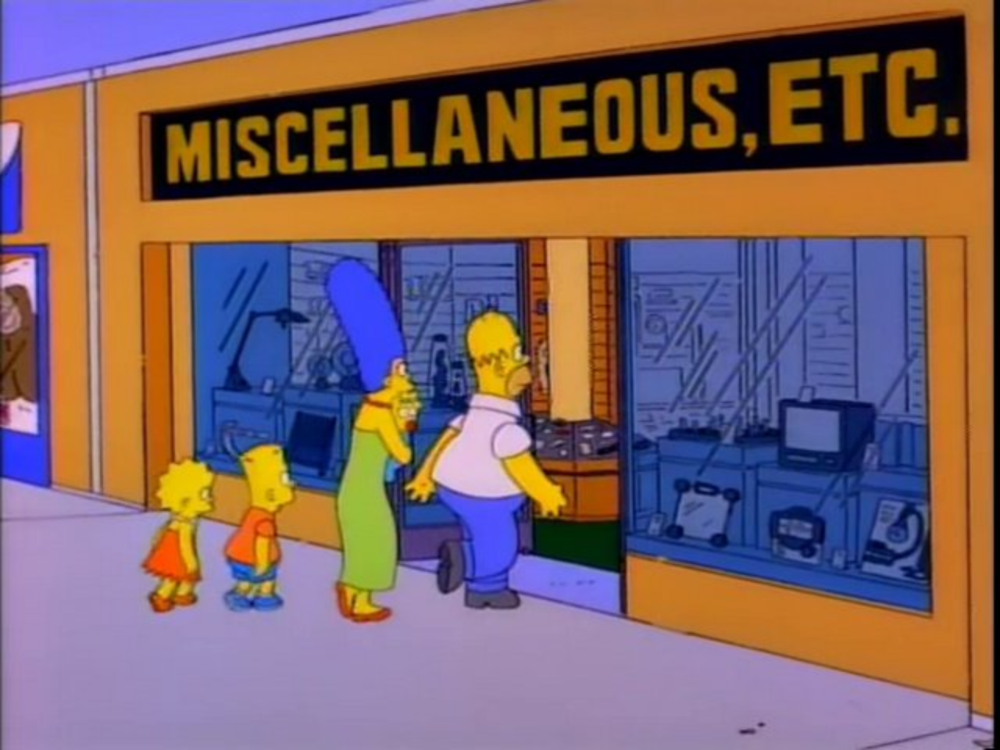

Miscellaneous
This page is relegated to miscellaneous videos, ones that don't cover movies, books, music, or repeating thinkers/critics. Personally, I would consider the video on The Simpsons to be the best in this category and most beginner friendly. It covers the history of sitcoms, how they were created in response to Soviet Union's rejection of the nuclear family, how The Simpsons parodied the nuclear family, and the controversy it created, specifially with the conservative crowd.
But, as with most good things, they must come to an end. As The Simpsons gained popularity, it began to lost its edge, or at least its writers were losing their ability to use the show as a way to parody the late 20th century experience. Instead of having criticizing celeberities or public figures like they would have in the past, they instead have them on the show purely for guest appereances. This lack of retaining its edge and the seemingly never ending seasons the creators produced led to many fans of the show calling the later seasons "Zombie Simpsons." It gets this title from the fact that they believe the show should have "died" (ended) many years ago but refuses to. It is too profitable for the Fox Corporation to end.
Read About "Zombie Simpson" Here